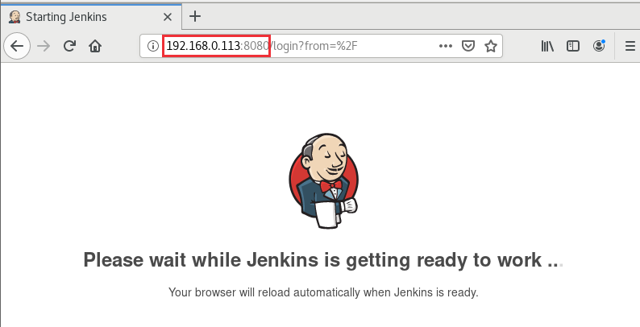
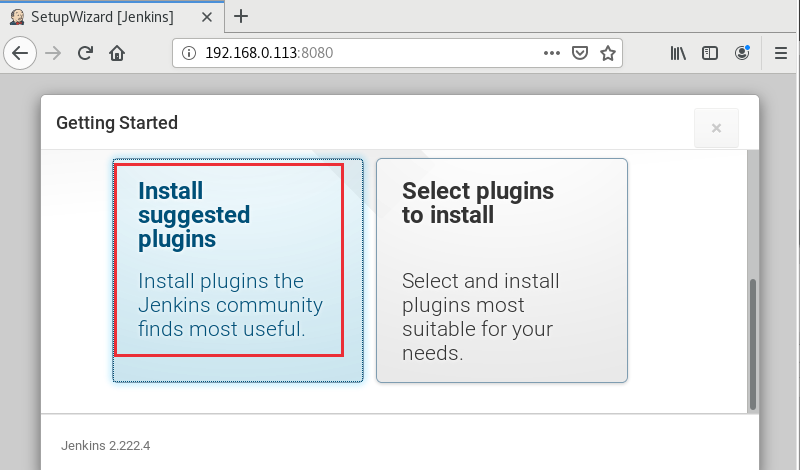
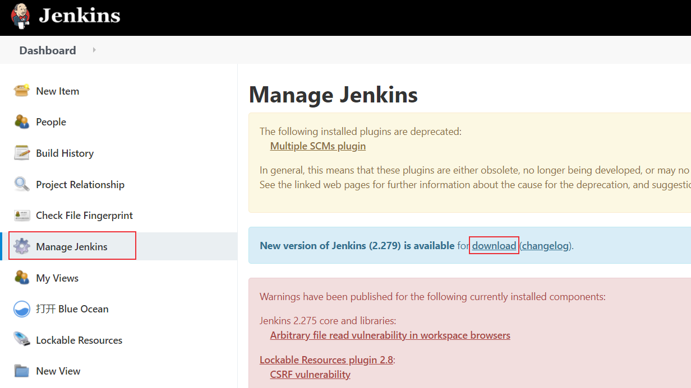
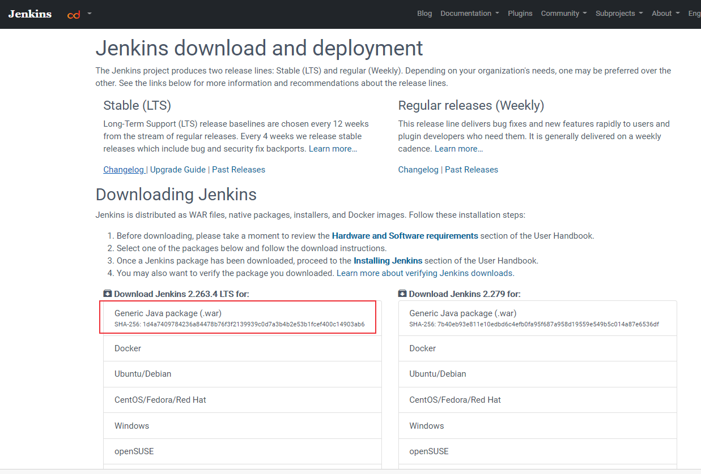

本文介绍使用docker来安装Jenkins服务的步骤。
环境准备
本文介绍在linux上如何使用docker来搭建Jenkins服务，我使用的系统为centos7：
1 | $ cat /etc/redhat-release |
在CentOS 7中安装docker的方法可参考容器技术介绍：Docker简介及安装 。
准备好docker环境之后还需要安装配置Java环境，在Jenkins 2.357 及 LTS 2.361.1之后的版本要求Java 11 或者 17，Java版本安装及升级步骤可参考Java环境安装配置步骤介绍。
Docker搭建Jenkins
1. 安装
Jenkins docker hub地址: https://hub.docker.com/r/jenkins/jenkins1
docker pull jenkins/jenkins
1
2
3
4
5
6
7
8
9
10
11
12
13
14
15
16
17
18
19
20
21
22
23
24
25
26[root@server /]# docker pull jenkins/jenkins
Using default tag: latest
latest: Pulling from jenkins/jenkins
3192219afd04: Already exists
17c160265e75: Already exists
cc4fe40d0e61: Already exists
9d647f502a07: Already exists
d108b8c498aa: Already exists
1bfe918b8aa5: Already exists
dafa1a7c0751: Already exists
c69d355c63ac: Pull complete
b15898bb1800: Pull complete
a51ccfc981f7: Pull complete
49f46bd4bf74: Pull complete
efa670fd97de: Pull complete
1565294bcba3: Pull complete
4c51bcfbed1e: Pull complete
49f4fafbfbf2: Pull complete
28a75541fa5f: Pull complete
c3c03c2d5564: Pull complete
ace64d1af7cf: Pull complete
f1960af3b8ab: Pull complete
6fd1a5a6d017: Pull complete
Digest: sha256:e4630b9084110ad05b4b51f5131d62161881216d60433d1f2074d522c3dcd6dc
Status: Downloaded newer image for jenkins/jenkins:latest
docker.io/jenkins/jenkins:latest
2. 创建docker的文件影射卷
创建docker的文件影射卷，用于存储数据1
2
3
4
5
6
7
8
9
10
11
12
13
14[root@server tmp]# docker volume create jenkins_test
[root@server tmp]# docker volume inspect jenkins_test
[
{
"CreatedAt": "2020-07-18T10:49:17+08:00",
"Driver": "local",
"Labels": {},
"Mountpoint": "/var/lib/docker/volumes/jenkins_test/_data",
"Name": "jenkins_test",
"Options": {},
"Scope": "local"
}
]
[root@server tmp]#
3. 运行: 创建实例
创建一个挂载目录jenkins，添加可执行权限：chmod 777 jenkins
1 | docker run --name=jenkins -d -p 8080:8080 -p 50000:50000 -v jenkins_test:/var/jenkins_home jenkins/jenkins |
运行：1
2
3
4
5
6[root@server /]# docker run --name=jenkins -d -p 8080:8080 -p 50000:50000 -v jenkins_test:/var/jenkins_home jenkins/jenkins
c7fb87aec99402febd95edddda5cf1dc7ad15437f674bf71a09692d93369ccb9
[root@server /]#
[root@server /]# docker ps
CONTAINER ID IMAGE COMMAND CREATED STATUS PORTS NAMES
c7fb87aec994 jenkins/jenkins "/sbin/tini -- /usr/…" 9 minutes ago Up 9 minutes 0.0.0.0:8080->8080/tcp, 0.0.0.0:50000->50000/tcp jenkins
如果要设置docker启动后自动启动jenkins，可以使用 --restart参数：1
docker run --name=jenkins -d -p 8080:8080 -p 50000:50000 --restart=always -v jenkins_test:/var/jenkins_home jenkins/jenkins
如果Jenkins已经启动，可以使用update命令：1
docker update --restart=always jenkins
浏览器输入电脑IP地址+端口号：http://192.168.0.103:8080/

docker logs -f jenkins 查看输出日志
注意：jenkins默认启动后的时区为美国，通过以下命令启动中国时区：1
2
3
4# 先删除已经构建的jenkins实例
docker rm -f jenkins
# 重新创建实例并设置时区
docker run --name=jenkins -d -p 8080:8080 -p 50000:50000 -v jenkins_test:/var/jenkins_home -e JAVA_OPTS=-Duser.timezone=Asia/Shanghai jenkins/jenkins
4. 查看默认密码：
1 | docker exec jenkins cat /var/jenkins_home/secrets/initialAdminPassword |
5. 输入密码
等待初始化完成后，输入密码
6. 安装推荐的插件

7. 设置用户名密码
8. Jenkins URL配置
配置成功后，进入欢迎界面
Jenkins更新
进入Manage Jenkins，提示新版本，点击下载 jenkins.war 包。

或者进入官网https://www.jenkins.io/download/下载指定版本的war 包。
1. jenkins.war 位置查看
方法1：Manage Jenkins中查看
点击进入Manage Jenkins，找到Status Information，点击System Information，可以查看war包位置
方法2：find命令查找
使用root账号进入容器中后使用find命令查找
1 | [root@server ~]# docker exec -it -u root jenkins bash |
2. 更新容器中的war包
使用root账号进入容器中，备份原来的war包1
2
3[root@server ~]# docker exec -it -u root jenkins bash
root@ed883da9faab:/# cd /usr/share/jenkins
root@ed883da9faab:/usr/share/jenkins# mv jenkins.war jenkins.war.bak
将下载的war包复制到容器目录 /usr/share/jenkins 下（注意是在宿主机上操作）1
2
3
4[root@server ~]# docker cp jenkins.war jenkins:/usr/share/jenkins/
[root@server ~]# docker exec -it -u root jenkins bash
root@ed883da9faab:/usr/share/jenkins# ls
jenkins.war jenkins.war.bak ref
3. 重启Jenkins
1 | $ docker restart jenkins |
刷新页面，登陆，进入Manage Jenkins，可以看到版本更新成功，可以降回原来的版本。
注意：可能会启动不成功，报如下错误：
1 | $ docker logs --tail="10" jenkins |
可能原因是jenkins.war只有只读权限，需要给它添加权限。而此时jenkins容器没有启动成功，我们是无法使用命令 docker exec -it -u root jenkins bash 进入容器内进行操作的。
docker容器其实是由容器镜像组成的（参考容器技术介绍之docker核心技术概述）我们可以直接在/var/lib/docker/overlay2/ 目录下找到对应镜像层下的jenkins.war文件。
直接使用 find 命令查找：
1 | $ find / -name jenkins.war |
有两个镜像层都有jenkins.war文件，可以都进去看一下。
进入对应镜像层目录下：
1 | $ cd /var/lib/docker/overlay2/fd53382dc318381b812fc76d22635f0e8244f1ff586c31681acd88bf81a2c40b/diff/usr/share/jenkins/ |
发现jenkins.war文件只有只读权限，添加权限：
1 | $ chmod 777 jenkins.war |
权限设置完成后就可以启动成功了。
Windows安装Jenkins
war文件启动方法
下载地址：https://www.jenkins.io/download/

进入war包所在路径执行命令：1
java -jar jenkins.war --httpPort=8081
可以直接下载jenkins.msi文件安装
配置方法和Linux类似
其它
jenkins系统日志查看
可使用 docker logs 命令查看jenkins日志。
1 | docker logs -h |
例如：
1 | # 查看jenkins最后10行日志 |
如果要查看jenkins所有系统日志，可直接查看jenkins日志文件，执行如下命令查询jenkins日志保存路径：
1 | $ docker inspect --format='{{.LogPath}}' jenkins |
返回的就是jenkins的日志文件路径。
本文标题:Docker搭建持续集成平台Jenkins
文章作者:hiyo
文章链接:https://hiyongz.github.io/posts/container-docker-for-jenkins-install/
许可协议:本博客文章除特别声明外，均采用CC BY-NC-ND 4.0 许可协议。转载请保留原文链接及作者。